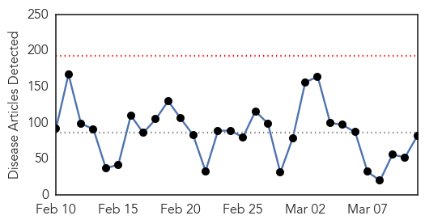
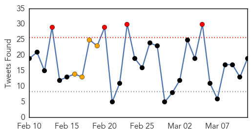
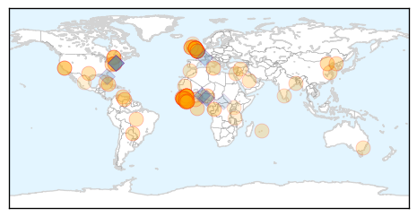
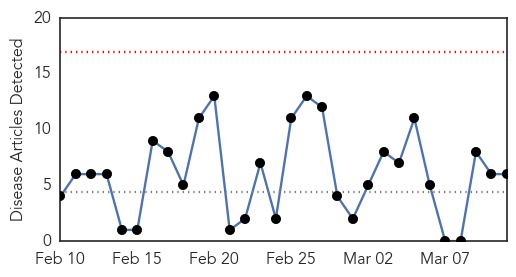
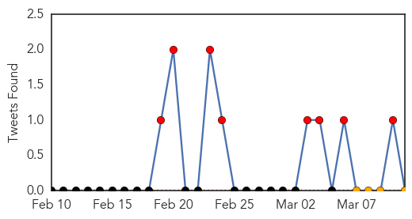
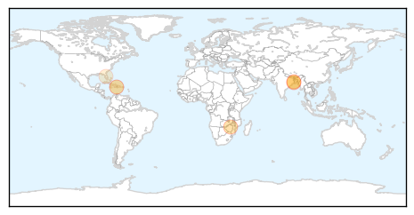

Ebola
30-Day Web Trend
0 alerts, 0 warnings

30-Day Twitter Trend
4 alerts, 4 warnings

Article Locations
Article Confidences

Top Articles:
- 1.000
- No new Ebola cases in Liberia for more than two weeks
- 1.000
- British military health worker tests positive for virus in Sierra Leone
- 1.000
- Ebola: Nigerians dump precautionary measures
- 1.000
- No new Ebola cases in Liberia for more than two weeks
- 0.999
- Briton diagnosed with Ebola in Sierra Leone
- 0.999
- WHO and WFP unite to gain zero Ebola cases as Koroma retreats to fight personal political battle
- 0.999
- UPDATE 2-UK military healthcare worker tests positive for Ebola in Sierra Leone
- 0.999
- Military medical team arrives home from inaugural Ebola mission
- 0.999
- British health worker diagnosed with Ebola in Sierra Leone: London
- 0.999
- UK military healthcare worker tests positive for Ebola in Sierra Leone
- 0.999
- Briton diagnosed with Ebola in Sierra Leone
- 0.999
- UK military health care worker tests positive for Ebola
- 0.998
- China’s Unprecedented Anti-Ebola Efforts Commendable
- 0.998
- Plane sent for Ebola health worker
- 0.998
- Plane sent for Ebola health worker
- 0.998
- Ebola at One Year: Cautious Africa Peeks Around a Corner
- 0.998
- UK Military Healthcare Worker In Sierra Leone Tests Positive For Ebola
- 0.997
- British military health-care worker tests positive for Ebola in Sierra Leone, Europe News & Top Stories
- 0.997
- UK military health worker diagnosed with Ebola — RT UK
- 0.997
- Nigeria declared Ebola-free, holds lessons for others
- 0.996
- WHO And World Food Program Join Forces To Eliminate Ebola In West Africa
- 0.996
- Pickens native battled Ebola outbreak in Liberia
- 0.995
- WHO papers examine recent Ebola epidemic
- 0.994
- Cardiff patient negative for Ebola
- 0.992
- British Military Medic Who Contracted Ebola In Sierra Leone Is Flying Home For Treatment
- 0.991
- Ebola scare: Cardiff patient tests NEGATIVE
- 0.991
- British Military Health Worker Has Ebola
- 0.987
- USAID Takes to the High Seas to Bring Reinforcements to Guinea’s Ebola Fight - Guinea
- 0.986
- EBOLA OUTBREAK UPDATES---March 10, 2015
- 0.985
- UK military health worker tests positive for Ebola
- 0.984
- Hope in the Fight to End Ebola
- 0.981
- Newcastle's RVI could treat military health worker diagnosed with Ebola in Sierra Leone
- 0.980
- Students weigh in on Student Aid Bill of Rights
- 0.980
- Red Line supporters plan to rally in Annapolis
- 0.980
- Treasury Secretary Jacob Lew tours Ellicott Dredges in Baltimore
- 0.978
- Welcome to the Expotimes News
- 0.978
- Ebola, the Road to Zero Cases and Recovery - Key recommendations from organisations working in West Africa - Sierra Leone
- 0.977
- Humanitarian Implementation Plan (HIP) EU Children of Peace (ECHO/CHD/BUD/2015/91000) Last update: 17/02/2015 Version 2 - Sierra Leone
- 0.966
- RAF plane sent to bring back British military worker with Ebola
- 0.965
- More funding from Canada needed for next phase of Ebola fight: UN
- 0.956
- As Ebola threat abates, Sierra Leone turns attention to survivors (+video)
- 0.955
- Negative Ebola test at University Hospital of Wales, Cardiff
- 0.953
- Texas nurse sues hospital for negligence after contracting Ebola
- 0.951
- Scientists discover 9 new dwarf galaxies orbiting Milky Way
- 0.951
- Granny cuts toddler's throat for nonstop crying
- 0.951
- Obama orders new sanction, declares Venezuela national security threat
- 0.951
- Bain Capital enters $2.4 bn deal pact to acquire Blue Coat System
- 0.951
- Launched at UN, latest 'Women in Politics' map reflects sluggish progress in gender equality
- 0.938
- Declining Ebola cases pose serious challenge to clinical studies, says GlobalData analyst
- 0.929
- RAF Flies British Military Ebola Victim Back To UK
Showing top 50 articles...
Top Tweets:
- 0.932
- RT: British military healthcare worker in Sierra Leone has tested positive for Ebola Public Health England spokesperson says - @World…
- 0.905
- WHO & @WFP partnership combines the strength with WHO’s public health expertise for GettingToZero Ebola cases
- 0.858
- “@orangebw: Don't let Ebola win. SMS Stop Ebola to 17997 to donate 3pula to AfricaAgainstEbola fund.” Botswana
- 0.766
- British Military Health Worker Has Ebola - TIME http://t.co/NfIO2IxQPw ebola EVD
- 0.751
- RT: WHO: Ebola cases keep coming but footprint is smaller (also cooperation w/ UN WFP Ebola antiviral trial) http://t.co/Rlq9jH…
- 0.728
- RT: @EbolaAlert Ebola subtypes from patient virus allows tracking of transmission clusters like HIV by phylogenetics. See http:…
- 0.696
- RT: Read our contribution to the Ebola Blog titled "Preparing Health Systems to Respond to Future Crisis http://t…
- 0.650
- British military health worker in Sierra Leone tests positive for Ebola http://t.co/J8AyQ2Iopx
- 0.613
- Ebola Crisis: Not Over Yet? - MedPage Today http://t.co/PQ3Wsk8TBG ebola EVD
- 0.582
- New Ebola cases are declining: Why that's bad news for a cure - Los Angeles Times http://t.co/bn2jeAsPgN ebola EVD
- 0.569
- Why we're still waiting on an Ebola vaccine - Al Jazeera America http://t.co/NRHmSDqIes ebola EVD
- 0.549
- Ebola en Guinée : victime de la rumeur une volontaire de la Croix-Rouge raconte son agression http://t.co/KKTIBAL17r via
- 0.537
- RT: New Ebola Sitrep 116 new confirmed cases in last week. For 2nd week 0 cases in Liberia http://t.co/QJjvzSNETN…
- 0.530
- Une cinquantaine de Guinéens dont le ministre de la Santé ont reçu un vaccin contre Ebola http://t.co/BaC3KvZwlx via
- 0.528
- RT: Our brothers and sisters in West Africa are under threat from Ebola and they need our help. AfricaAgainstEbola
- 0.524
- RT: The beginning of the end of the Ebola outbreak in Sierra Leone. More photos will be shared on http://t.co/ekJzlv2Wci http://t.…
- 0.519
- Ebola clinical trials remain challenging but they're a vital part of response efforts. We're working hard on TKM-Ebola trial here in SL.
- 0.514
- RT: @AfricaStopEbola Ebola: Un premier vaccin administré à une cinquantaine de volontaires en Guinée http://t.co/G4EBN7kOZd v…
- 0.502
- At Liberia's Border With Sierra Leone Resuming Trade Amid Temperature Checks. Our report from Bo Waterside Ebola http://t.co/OLXDyxT8JM
Cholera
30-Day Web Trend
0 alerts, 0 warnings

30-Day Twitter Trend
8 alerts, 0 warnings

Article Locations
Article Confidences
Top Articles:
Top Tweets:
-
No tweets found for Mar 11, 2015